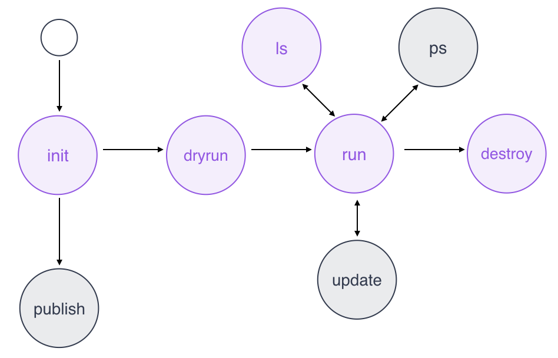

A deployment tool for appops.
The DC/OS deployment tool for appops allows you to create, deploy and manage services and apps composed of microservices (µS):
dploy is a single binary incl. all dependencies.
The main motivation behind the creation of dploy was the desire to help developers to strengthen their ops skills.
We use convention over configuration in dploy and given the limited command set it should be fairly easy to get started.
Also, note that dploy is routing and service discovery-agnostic, or put in other words: it is not opinionated about how the µS should be wired up: you can use plain old Mesos-DNS or linkerd or VAMP or what have you.
So, now would be a good time to either install dploy and start using is, or maybe you want to see it in action first?
From source (will get you always the latest version):
$ go get github.com/mhausenblas/dploy
$ go build
Alternatively, you can download binaries for Linux, OSX, and Windows or use it via Docker
$ docker pull mhausenblas/dploy:0.5.1
# you can use dploy as follows then (note the usage of the volume):
$ docker run --rm -it -v /Users/mhausenblas/tmp:/tmp mhausenblas/dploy:0.5.1 init /tmp
dploy.
To simplify the DC/OS authentication handling, you can create a SSH tunnel from your local machine to the DC/OS master like so:
$ ssh -i ~/.ssh/MYKEY core@MYMASTER -f -L 8080:localhost:8080 -NThe above command forwards traffic from your local machine to the System Marathon in DC/OS. It assumes that you're already authenticated and if this is not the case you want to do a dcos auth login before. Once the tunnel is successfully established you can use http://localhost:8080 for the marathon_url attribute in dploy.app.
To set the log output level for dploy, use the environment variable DPLOY_LOGLEVEL. For example, to set it globally use:
$ export DPLOY_LOGLEVEL=debug
Of course, you can also set the log output level on a per-run basis, using $ DPLOY_LOGLEVEL=info dploy dryrun. Note that the default value—if you don't set the environment variable—is DPLOY_LOGLEVEL=error.
The supported workflow comprises 8 commands, with the following state transitions:
Usage:
$ dploy <command> [workdir] [command-args]With:
<command> one of the below.[workdir]: where to perform the command, defaults to ./, i.e. the current directory.[command-args]: zero or more arguments, depending on the command.
This command creates an app descriptor dploy.app as well as the specs/ directory and
using the environment variable DPLOY_EXAMPLES you can influence which, if any examples should be made available.
Usage:
$ dploy initExamples:
$ dploy init
This is dploy version 0.5.2
Using workdir: ./
Please visit http://dploy.sh to learn more about me,
report issues and also how to contribute to this project.
================================================================================
🗣 Initializing your app ...
🙌 Done initializing your app:
Set up app descriptor in /Users/mhausenblas/tmp/dploy.app
Created app spec directory /Users/mhausenblas/tmp/specs
🗣 Now it's time to edit the app descriptor and adapt or add Marathon app specs. Next, you can run `dploy dryrun`
$ DPLOY_EXAMPLES=all dploy init
This is dploy version 0.5.2
Using workdir: ./
Please visit http://dploy.sh to learn more about me,
report issues and also how to contribute to this project.
================================================================================
🗣 Initializing your app ...
🙌 Done initializing your app:
Set up app descriptor in /Users/mhausenblas/tmp/dploy.app
Created app spec directory /Users/mhausenblas/tmp/specs
Initialized app spec directory with some examples
🗣 Now it's time to edit the app descriptor and adapt or add Marathon app specs. Next, you can run `dploy dryrun`
This command validates the app descriptor by checking if Marathon is reachable and also checks if the app spec directory is present, incl. at least one Marathon app spec.
Usage:
$ dploy dryrunExample:
$ dploy dryrun
This is dploy version 0.5.1
Please visit http://dploy.sh to learn more about me,
report issues and also how to contribute to this project.
================================================================================
🗣 Kicking the tires! Checking Marathon connection, descriptor and app specs ...
🙌 Found DC/OS Marathon instance
🙌 Found an app descriptor
🙌 Found 2 app spec(s) to deploy
🗣 Now you can launch your app using `dploy run`
This command launches the app as defined in the app descriptor and the app specs. It scans the specs/ directory for Marathon app specs and launches them using the Marathon API.
Usage:
$ dploy runExample:
$ dploy run
This is dploy version 0.5.1
Please visit http://dploy.sh to learn more about me,
report issues and also how to contribute to this project.
================================================================================
🗣 OK, let's rock and roll! Trying to launch your app ...
🙌 Launched your app!
🗣 Now you can use `dploy ls` to list resources or `dploy destroy` to tear down the app again.
This command tears down the app by deleting the Marathon apps based on the app specs found in the specs/ directory.
Usage:
$ dploy destroyExample:
$ dploy destroy
This is dploy version 0.5.1
Please visit http://dploy.sh to learn more about me,
report issues and also how to contribute to this project.
================================================================================
🙌 Destroyed your app!
This command lists resources of the app, based on dploy.app and the app specs found in the specs/ directory.
Usage:
$ dploy lsExample:
$ dploy ls
This is dploy version 0.5.1
Please visit http://dploy.sh to learn more about me,
report issues and also how to contribute to this project.
================================================================================
🗣 Resources of your app CHANGEME ...
RESOURCE LOCATION STATUS
Marathon http://localhost:8080 💚 online
/helloworld specs/helloworld.json 💔 offline
/webserver specs/nginx.json 💔 offline